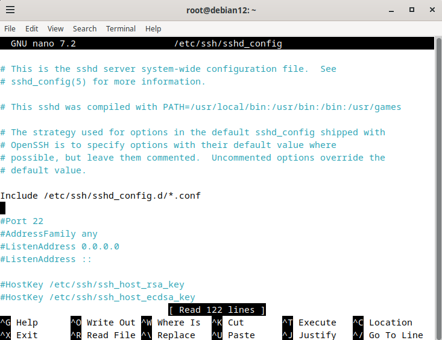
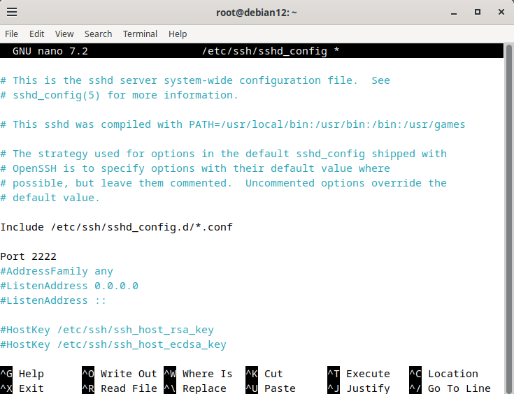
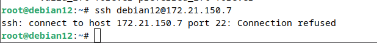
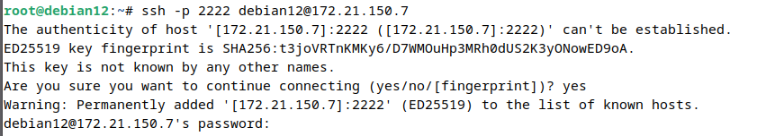

Sensibilisation à l’hygiène informatique et à la cybersécurité
Dans le cadre de la SAÉ 1.01 « Se sensibiliser à l’hygiène informatique et à la cybersécurité », j’ai travaillé sur le lot B portant sur les accès SSH.
L’objectif de ce travail était de comprendre le fonctionnement du protocole SSH, d’étudier les mécanismes de chiffrement et de mettre en place différentes méthodes permettant de sécuriser un accès distant sur une machine Linux.
Durant cette SAE, j’ai installé et configuré un serveur OpenSSH sur une machine Debian.
J’ai ensuite testé la connexion distante entre deux machines afin de vérifier le bon fonctionnement du service SSH.
Afin de renforcer la sécurité, plusieurs mesures ont été mises en place :
Après avoir installé et testé le serveur OpenSSH, j’ai souhaité modifier le port SSH par défaut afin de limiter les tentatives d’attaques automatisées ciblant le port 22.
Pour commencer, j’ai ouvert le fichier de configuration du service SSH :
J’ai ensuite modifié le port par défaut 22 afin d’utiliser le port 2222.
Dans ce fichier, j’ai recherché la ligne suivante : #Port 22
Je l’ai ensuite modifiée afin d’utiliser le port 2222 :
avant modification :
Figure 1 — Configuration SSH avant modification du port dans le fichier sshd_config.

Figure 1.1 — Configuration SSH après modification du port dans le fichier sshd_config.

Cette modification permet d’éviter l’utilisation du port SSH par défaut, souvent ciblé par des attaques automatisées.
Après avoir enregistré les modifications du fichier de configuration, j’ai redémarré le service SSH afin d’appliquer les nouveaux paramètres.
Après le redémarrage du service, j’ai tenté d’établir une connexion SSH avec la commande habituelle.
Cependant, la connexion échouait avec le message : Connection refused.

Figure 2 — Erreur “Connection refused” lors de la tentative de connexion sur le port 22.
Après réflexion, j’ai compris que le client SSH essayait toujours de se connecter sur le port 22 par défaut, alors que le serveur utilisait désormais le port 2222. suite à la modification effectuée dans le fichier sshd_config.
Le problème ne venait donc pas du service SSH lui-même, mais du port utilisé lors de la connexion.
Pour corriger ce problème, j’ai utilisé l’option -p afin de préciser manuellement le nouveau port :
La connexion distante a ensuite fonctionné correctement.
Figure 3 — Connexion SSH réussie après utilisation du port 2222.

Il suffit ensuite de saisir le mot de passe de l’utilisateur pour établir la connexion SSH.